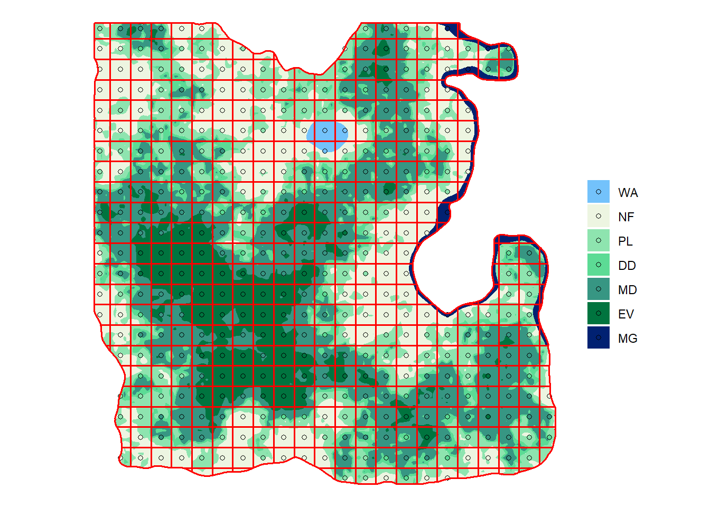
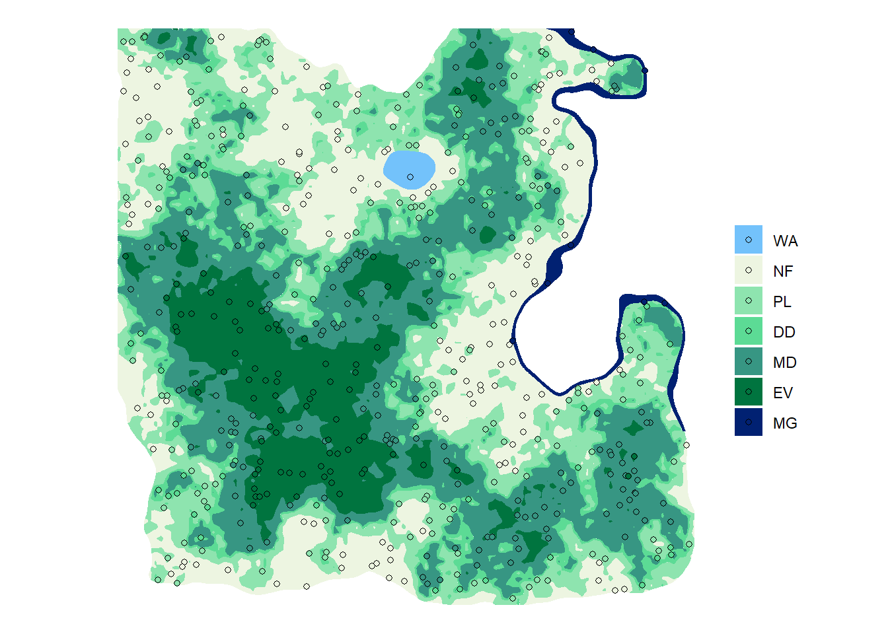
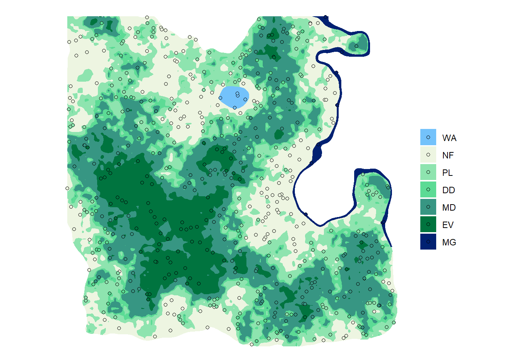
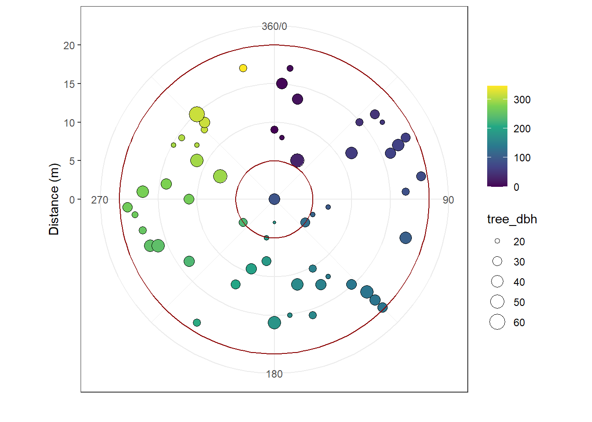

2 Sampling
2.1 Number of random samples
NFI main variable
In this interactive module the main variable of interest is the forest
In the next version of the interactive module, additional key variables of interest will be presented, such as biodiversity (Shannon index, Importance Value Index) and commercial volume.
Indicative variability
Remember in the NFI module lesson 3, the formula to estimate the sampling size n is:
\[n = \left(\frac{CV \cdot t^{1 - \alpha/2}_{n-1}}{A}\right)^2 \sim \left(\frac{CV \cdot 1.96}{A}\right)^2\] with \(CV = \mu / \sigma\) the NFI main variable coefficient of variation in percentage (i.e. average \(\mu\) divided by standard deviation \(\sigma\) * 100), \(A\) the desired precision in percentage and \(t^{1 - \alpha/2}_{n-1}\) the Student t-distribution with \(n-1\) degrees of freedom and \(1-\frac{\alpha}{2}\) confidence which is approximated by the value 1.96 .
Thanks to fi_agb, the results of the preliminary forest inventory, we have an estimate of \(\mu\) and \(\sigma\) for a forest stand in ``Louland. While this stand is most likely not representative of the whole island, we can use it to make an estimate of the number of samples necessary to achieve various target precision values. The final number of plots will depend on the desired precision and your budget constraints. In case of a systematic sampling we can add an additional constraint that we want the NFI grid to be a round km value.
Let’s first calculate the number of sample for different precision levels. For a 5% precision, the number of sample is:
n05 <- ((fi_agb$mean_agb / fi_agb$sd_agb) * 1.96 / 0.05)^2
n05[1] 1707.872
Your turn, calculate n10, n15 and n20, the number of samples necessary to get respectively 10%, 15% and 20% precision on Louland’s mean aboveground biomass.
Calculations for 10% here:
## Guided
n10 <- ((fi_agb$mean_agb / fi_agb$sd_agb) * 1.96 / 0.1)^2
n10[1] 426.968
Calculations for 15% here:
## Guided
n15 <- ((fi_agb$mean_agb / fi_agb$sd_agb) * 1.96 / 0.15)^2
n15[1] 189.7635
Calculations for 20% here:
## Empty console
n20 <- ((fi_agb$mean_agb / fi_agb$sd_agb) * 1.96 / 0.2)^2
n20[1] 106.742Well done! We have enough budget for around 600 plots. What is the best range of precision we can afford?
Multiple choices
- 5% - 10%
- 10% - 15%
- 15% - 20%
Systematic sampling design
Now let’s see what sampling grid spacing this would lead to.
To get the exact number of samples (at least according to our preliminary data, some forest plot may very well be non forest on the ground), we will start from a systematic sampling design. This way we can account for the additional constraint on grid spacing, and afterwards we will make a simple random sampling that matches the same number of plots.
The sf package contains the function st_make_grid() to create random and grid points within an existing polygon. The new land fits more or less in a 90 km square, meaning that if we were to place a sampling plot at the center of each square of a 1 km grid we would have 90 * 90 = 8100 sampling plots. Similarly a 4 km grid would give us approximately (90 / 4)^2 = 506.25 plots. This is close to the number of plots for 10% precision on AGB so we will start there.
The 4 km grid
Let’s make the grid. We have the sf_admin shapefile that contains the administrative boundary of Louland and can be used as a canvas for the grid.
We will also offset the grid starting point 1 km South and 1 km West of the land most Southern and Western point to avoid have too many plots at the edge of the land. This is a precaution specific for this exercise and may not be needed in a real country! The offset is calculated based on the land cover shapefile bounding box.
## Might as well be hidden
offset <- st_bbox(sf_lc)[c("xmin", "ymin")] + c(-1000, -1000)To make the grid we use the option what = "polygon"…
sf_grid4 <- st_make_grid(sf_lc, cellsize = c(4000, 4000), what = "polygons", offset = offset) %>%
st_intersection(sf_admin)
… And to make points we change the option to what = "center" (replace "center" with "corner" to have the point at the grid intersections).
sf_points4 <- st_make_grid(sf_lc, cellsize = c(4000, 4000), what = "centers", offset = offset) %>%
st_intersection(sf_admin) %>%
st_as_sf()
Finally, we can extract the land cover information at each plot location with st_intersection()…
sf_plot4 <- sf_points4 %>%
st_join(sf_lc) %>%
mutate(lc = fct_reorder(lc, lc_id)) %>%
filter(!is.na(lc))… And visualize the grid with the following code (we have a custom color palette pal for Louland land covers).
ggplot() +
geom_sf(data = sf_lc, aes(fill = lc), color = NA) +
geom_sf(data = sf_plot4, aes(fill = lc), shape = 21) +
geom_sf(data = sf_grid4, fill = NA, col = "red", size = 0.6) +
#geom_sf(data = sf_admin, fill = NA, size = 1.2) +
scale_fill_manual(values = pal) +
labs(fill = "", color = "") +
theme_void()
Looking good! To calculate the number of plot in each forest type and the total we can use group_by() and summarise() again.
nplot4 <- sf_plot4 %>%
as_tibble() %>%
group_by(lc) %>%
summarise(n = n())
nplot4 # A tibble: 7 x 2
lc n
<fct> <int>
1 WA 3
2 NF 102
3 PL 93
4 DD 37
5 MD 129
6 EV 54
7 MG 5We then need to remove non-forest categories with filter() and sum the remaining number of plots.
nplot4_total <- nplot4 %>%
filter(!(lc %in% c("WA", "NF"))) %>%
summarise(n = sum(n))
nplot4_total# A tibble: 1 x 1
n
<int>
1 318
While we can definitely afford this sampling size, we can intensify a bit to increase our precision. In our very first approximation we didn’t account for the fact that a good proportion of the land is non-forest.
You turn! Prepare sf_pointx, sf_plotx, nplotx and nplotx_total with x taking the values 3 and 2 for creating respectively a 3 and 2 km grids.
The 3 km grid
Create directly:
- Points with the option
what = "center", this time thecellsizeargument will be 3000 m.
## Guided
sf_points3 <- st_make_grid(sf_lc, cellsize = c(3000, 3000), what = "centers", offset = offset) %>%
st_intersection(sf_admin) %>%
st_as_sf()- Plots by joining the land cover shapefile
sf_newland.
## Guided
sf_plot3 <- sf_points3 %>%
st_join(sf_lc) %>%
mutate(lc = fct_reorder(lc, lc_id)) %>%
filter(!is.na(lc))
- A map with the plots over the land cover (remember we have a custom color palette
newland_paletteforLoulandland covers).
## Guided
ggplot() +
geom_sf(data = sf_lc, aes(fill = lc), color = NA) +
geom_sf(data = sf_plot3, aes(fill = lc), shape = 21) +
scale_fill_manual(values = pal) +
labs(fill = "", color = "") +
theme_void()
- Calculations of the number of plots per land cover class.
## Guided
nplot3 <- sf_plot3 %>%
as_tibble() %>%
group_by(lc) %>%
summarise(n = n())
nplot3 # A tibble: 7 x 2
lc n
<fct> <int>
1 WA 6
2 NF 179
3 PL 166
4 DD 77
5 MD 199
6 EV 106
7 MG 5- And the total number of plot in forests.
## Guided
nplot3_total <- nplot3 %>%
filter(!(lc %in% c("WA", "NF"))) %>%
summarise(n = sum(n))
nplot3_total# A tibble: 1 x 1
n
<int>
1 553Good job! The 3 km grid looks like exactly what we need. Let’s still design a 2 km grid to see if we could afford it.
The 2 km grid
Create directly:
- Points with the option
what = "center".
## Empty console
sf_points2 <- st_make_grid(sf_lc, cellsize = c(2000, 2000), what = "centers", offset = offset) %>%
st_intersection(sf_admin) %>%
st_as_sf()- Plots by joining the land cover shapefile
sf_newland.
## Empty console
sf_plot2 <- sf_points2 %>%
st_join(sf_lc) %>%
mutate(lc = fct_reorder(lc, lc_id)) %>%
filter(!is.na(lc))
- A map with the plots over the land cover (remember we have a custom color palette
newland_paletteforLoulandland covers).
## Empty console
ggplot() +
geom_sf(data = sf_lc, aes(fill = lc), color = NA) +
geom_sf(data = sf_plot2, aes(fill = lc), shape = 21) +
scale_fill_manual(values = pal) +
labs(fill = "", color = "") +
theme_void()
- Calculations of the number of plots per land cover class.
## Empty console
nplot2 <- sf_plot2 %>%
as_tibble() %>%
group_by(lc) %>%
summarise(n = n())
nplot2 # A tibble: 7 x 2
lc n
<fct> <int>
1 WA 10
2 NF 390
3 PL 375
4 DD 166
5 MD 462
6 EV 215
7 MG 30- And the total number of plot in forests.
## Empty console
nplot2_total <- nplot2 %>%
filter(!(lc %in% c("WA", "NF"))) %>%
summarise(n = sum(n))
nplot2_total# A tibble: 1 x 1
n
<int>
1 1248
ADD exercise: what grid to select
Good job! The 2 km grid is outside our budget constraint so we will continue with the 3 km grid!
Recap
Based on the preliminary inventory and few R skills, we have now identified a good sampling grid. To recap the process was:
- We used the preliminary forest inventory results to calculate a an hypothetical number of samples required for a desired precision of 5, 10, 15 or 20%.
- Based on our available budget we have identified a suitable range of sampling sizes.
- We have then created different sampling grids to
Loulandand estimated how many plots would fall on forest land. - We have selected the most adequate sampling grid based on our budget/precision trade-off.
2.2 Random Sampling
Complete random sampling designs have a number of disadvantages and are generally not recommended at national scale. We will still relocate our 553 plots randomly to compare different sampling designs and demonstrate their pros and cons.
The equivalent of st_make_grid() for random sampling is st_sample(). Every time st_sample() is used a new set of random locations are created. To get the same random allocation every time we need to set the random selection with a seed and the function set.seed(). In the example we will uise set.seed(36) but feel free to change or remove the function in the practice below.
set.seed(10)
sf_points_rd <- st_sample(x = sf_lc, size = nplot3_total$n) %>%
st_as_sf()
We can then extract the land cover at the plots’ location…
sf_plot_rd <- sf_points_rd %>%
st_join(sf_lc) %>%
mutate(lc = fct_reorder(lc, lc_id)) %>%
filter(!is.na(lc))… And map them.
ggplot() +
geom_sf(data = sf_lc, aes(fill = lc), color = NA) +
geom_sf(data = sf_plot_rd, aes(fill = lc), shape = 21) +
scale_fill_manual(values = pal) +
labs(fill = "", color = "") +
theme_void()
If at a first glance the plot distribution shows a decent coverage of the new land, the interesting part is the calculation of the number of ploot pooer land cover category.
## Empty console
nplot_rd <- sf_plot_rd %>%
as_tibble() %>%
group_by(lc) %>%
summarise(n = n())
nplot_rd# A tibble: 7 x 2
lc n
<fct> <int>
1 WA 1
2 NF 126
3 PL 132
4 DD 57
5 MD 151
6 EV 78
7 MG 8
Practice time! in the console windows below, test different seed numbers and visualize the results.
- Create the points:
## Guided
set.seed(36)
sf_points_practice <- st_sample(x = sf_lc, size = nplot3_total$n) %>%
st_as_sf()- Add the land cover information:
## Guided
sf_plot_practice <- sf_points_practice %>%
st_join(sf_lc) %>%
mutate(lc = fct_reorder(lc, lc_id)) %>%
filter(!is.na(lc))
- Show the plot locations on a map:
ggplot() +
geom_sf(data = sf_lc, aes(fill = lc), color = NA) +
geom_sf(data = sf_plot_practice, aes(fill = lc), shape = 21) +
scale_fill_manual(values = pal) +
labs(fill = "", color = "") +
theme_void()
- Calculate the number of plots per land cover type:
## Empty console
nplot_practice <- sf_plot_practice %>%
as_tibble() %>%
group_by(lc) %>%
summarise(n = n())
nplot_practice# A tibble: 7 x 2
lc n
<fct> <int>
1 WA 5
2 NF 137
3 PL 132
4 DD 63
5 MD 136
6 EV 71
7 MG 9
2.3 Uneven Systematic Sampling
TBD
2.4 Plot designs
In this version of the interactive module, the plot design is limited to one choice:
- circular plot of 20 m radius for all trees with a diameter at breast height bigger than orr equal to 20 cm,
- nested circular plot of 5 m radius for trees with a diameter at breast height bigger than or equal to 10 cm and smaller than 20 cm.
Let’s see for example all the trees measured in one plot: "ev-ywt8".
